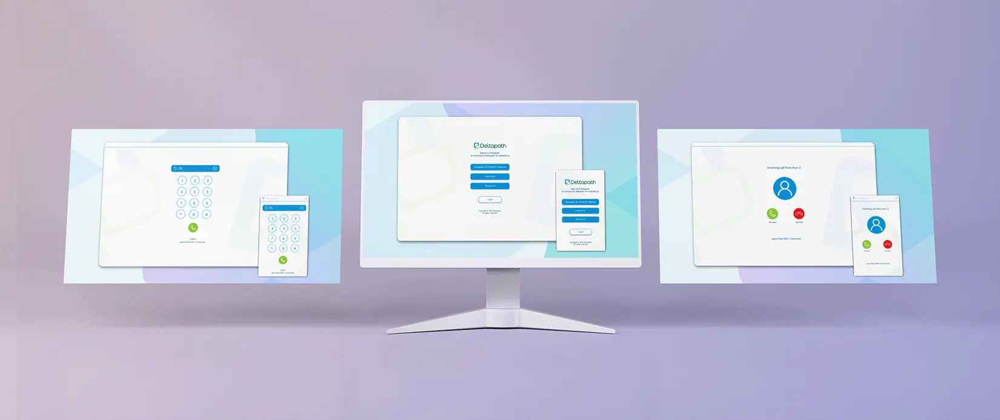
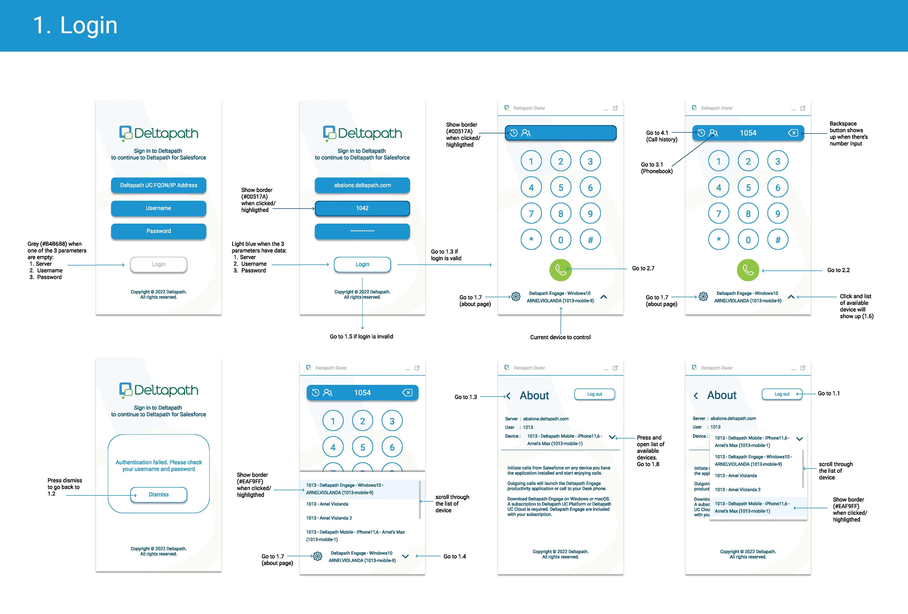
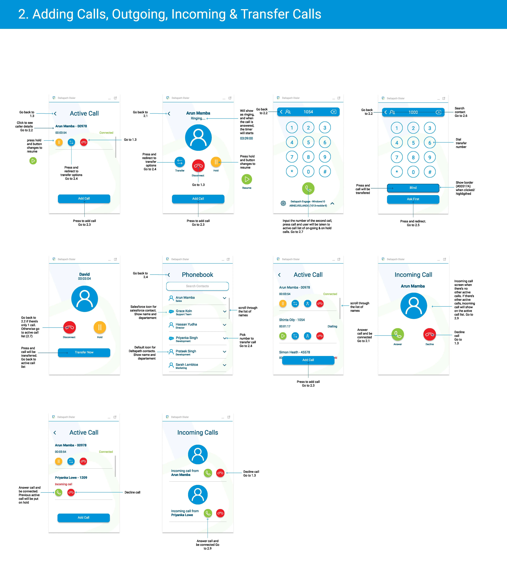
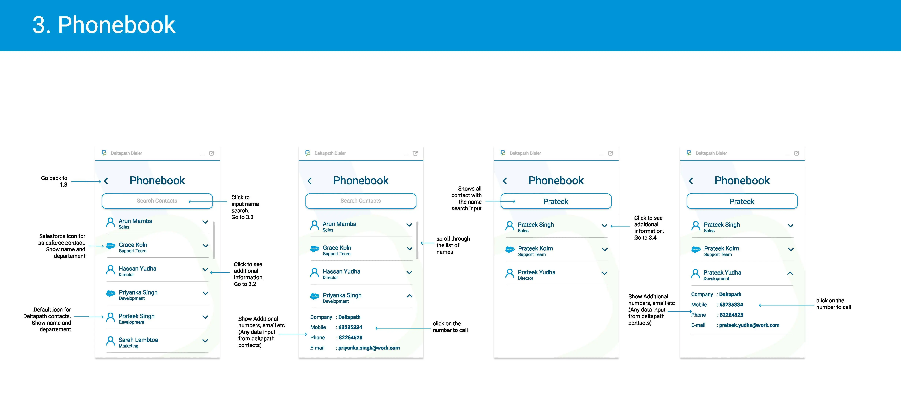
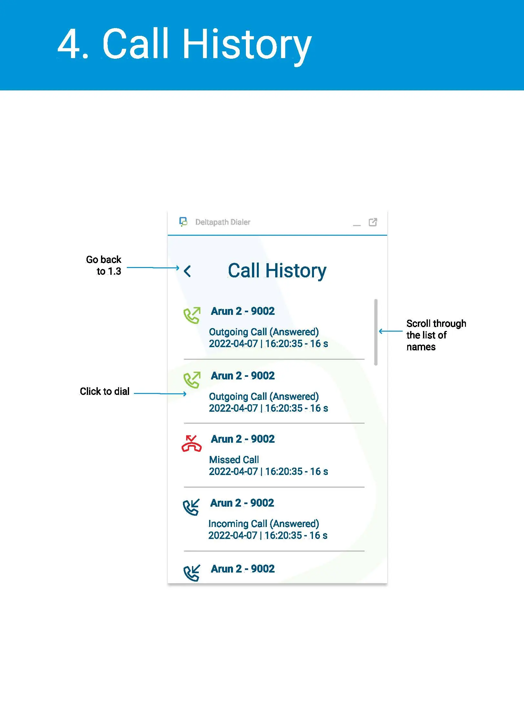
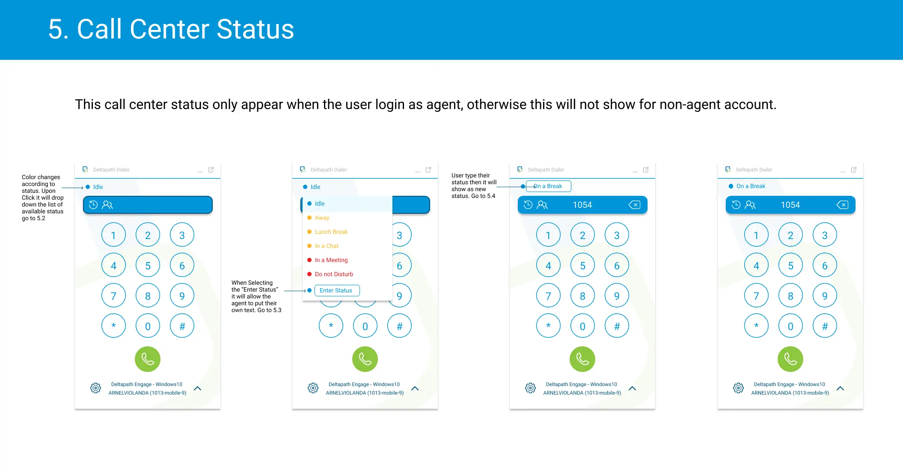

Deltapath Salesforce CTI Integration
Initiate calls from your Salesforce on any device you have the application installed and start enjoying
audio or video calls from anywhere. Enjoy Salesforce computer telephony integration (CTI).
Outgoing calls launch the Deltapath Engage or Deltapath Mobile productivity application. Download
Deltapath Engage on Windows or macOS or download Deltapath Mobile on iOS or Android.
Expertise
UX & UI Design
Year
2022

Techonogies:


Problem:
Before the introduction of Open CTI (Computer Telephony Integration), Salesforce users could only use the
features of a CTI system after they installed a CTI adapter program on their machines. These types of
programs often included desktop software that required maintenance and didn’t offer the benefits of cloud
architecture. After the Open CTI implementation was introduced, it’s now integrated with Salesforce using
the Salesforce Call Center.
My responsibility in this project is to design the Open CTI implementations' user interface and user
experience.
Process:
When rolling out all the screens, careful attention was paid so that the colour hierarchies were respected.
White space was used generously to keep the layouts uncluttered and to balance out the vibrancy of the icon
colours. Using strong and simple geometry and confident typography, we created a quick and effective UI that
looks good with the brand guidelines. We used circular forms to create a more welcoming look for the
application.
The working process can be summarized to:
-
Work on the software requirements with the product design manager.
-
Find out what Salesforce agents are in need of and what their pain points are.
-
I began working on redesigns for particular aspects of the calling experience, such as choosing transfer choices, while I was conducting research.
Results:
Although the project is still in development, we have received positive comments thus far from our potential consumers, who appreciate the colourful design and straightforward user interface.




